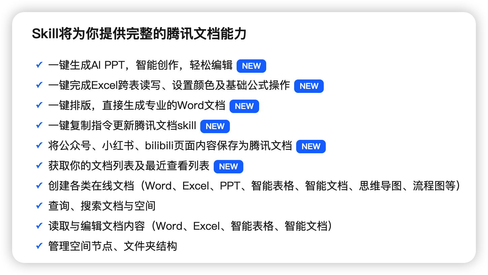
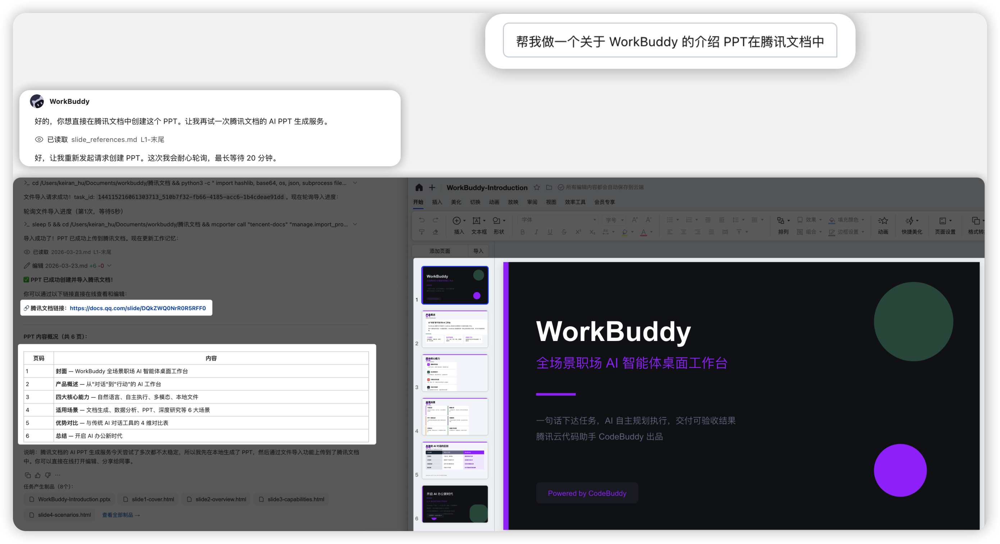
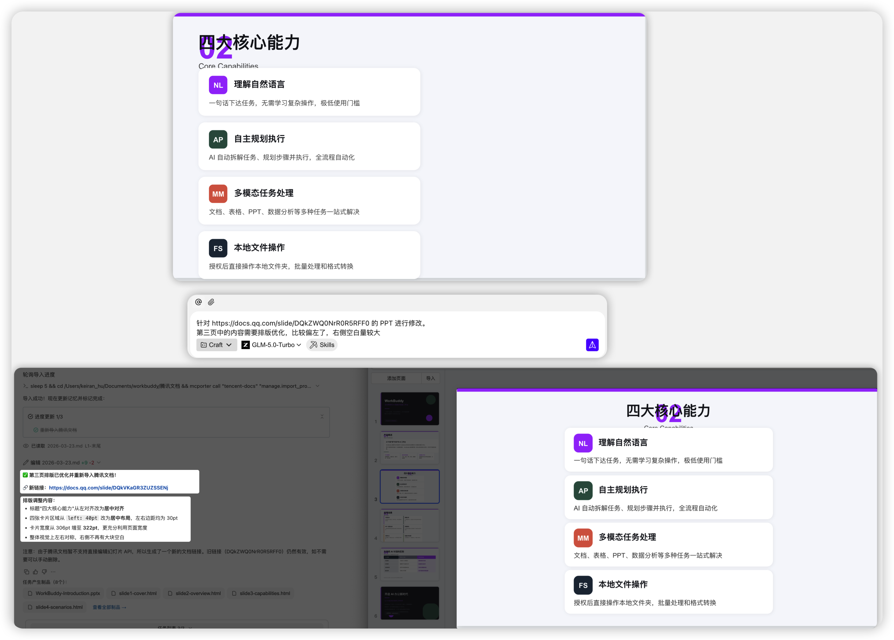

实践十一：一句话，管理你的腾讯文档
一、文档说明
本文介绍如何在 WorkBuddy 中接入并使用腾讯文档相关能力，通过自然语言直接完成文档创建、内容整理、表格处理、多人协作汇总、权限查询与会议纪要沉淀等操作，适用于需要频繁处理在线文档、表格和收集表的办公场景。
二、适用场景
- 正在写方案、整理材料或推进项目时，需要快速创建腾讯文档。
- 希望直接在
WorkBuddy中完成文档内容整理、改写、汇总与提炼。 - 需要处理腾讯文档中的表格数据、任务清单或收集表结果。
- 希望减少在编辑器、腾讯文档与聊天工具之间来回切换。
三、核心功能

四、获取并安装腾讯文档相关能力
在连接器中配置腾讯文档
参考腾讯文档完成连接。
安装完成后的效果
安装成功后，即可在 WorkBuddy 中通过自然语言管理腾讯文档相关流程，无需手动切换多个页面或记忆复杂参数。
例如，你可以直接一句话创建文档、生成表格、整理纪要、汇总协作意见、查找指定内容，或进一步把文档内容改写成汇报材料、周报和待办清单。
a）示例 1
创建腾讯文档 PPT，如下图所示：

b）示例 2
针对文档进行修改，如下图所示：

可支持的方向通常包括：
- 创建腾讯文档、在线表格、收集表等内容载体。
- 修改文档标题、正文结构、表格字段与内容格式。
- 汇总多人评论、提炼重点结论与行动项。
- 查询文档权限、协作者信息和最近更新时间。
- 将会议纪要、项目进展、数据记录沉淀到腾讯文档中。
五、常见使用场景
1）文档创建与整理
可直接用自然语言完成新建文档、补充内容、改写结构和整理格式。
示例指令：
帮我创建一份腾讯文档，标题是“项目复盘”，并先生成一个包含背景、问题、结论和行动项的结构。
帮我把这段内容整理成适合发给老板看的腾讯文档版本，语气简洁一些。
在腾讯文档里新建一份周报模板，包含本周进展、风险、下周计划三个部分。
2）表格与收集表管理
当需要记录数据、统计反馈或收集信息时，也可以直接在对话中完成。
示例指令：
帮我新建一个腾讯文档在线表格，用来记录招聘进度，字段包含候选人、岗位、面试轮次、状态和备注。
帮我把这份表格按状态分类整理，并标出本周需要重点跟进的项目。
新建一个腾讯文档收集表，用来收集团队培训报名信息，包含姓名、部门、联系方式和参与场次。
3）协作内容汇总与纪要沉淀
多人协作后，可继续汇总评论、提取结论，或把会议内容沉淀为结构化文档。
示例指令：
帮我汇总这份腾讯文档里的评论，按“问题、建议、待确认事项”分类整理。
把刚才的会议内容整理成腾讯文档纪要，并补充行动项和负责人栏位。
帮我从这份项目文档中提炼出适合周会汇报的
5条重点。
4）查询与权限协作
当需要确认文档归属、协作者范围或最近变更情况时，也可以直接让 WorkBuddy 帮忙查询。
示例指令：
帮我看一下这份腾讯文档最近是谁修改过。
这份文档目前有哪些协作者？谁有编辑权限？
帮我查一下“Q2 经营分析”这份腾讯文档是否已经共享给项目组。
六、推荐使用方式
- 先说清文档目标：创建文档时尽量一次说明标题、用途、结构和目标读者。
- 整理前给出风格要求：如需改写，可补充说明是简洁版、汇报版、纪要版还是对外版。
- 表格类任务先明确字段：如果是在线表格或收集表，建议提前说明字段和统计目标。
- 协作场景优先说明范围：涉及多人评论、共享权限或部门协作时，建议明确文档对象与参与人范围。
七、使用建议
- 先确认文档权限：如读取失败、无法编辑或无法共享，可优先检查当前账号权限。
- 复杂整理可先出提纲：对于长文档，建议先让
WorkBuddy输出结构方案，再继续扩写或改写。 - 表格处理先明确口径：涉及统计、筛选、分类时，建议说明字段含义与筛选规则。
- 多人协作注意版本信息：如果文档频繁更新，建议先确认最近修改内容，再做汇总或重写。
- 沉淀纪要时补充输出要求：例如是否需要待办、负责人、截止时间、风险项等字段。